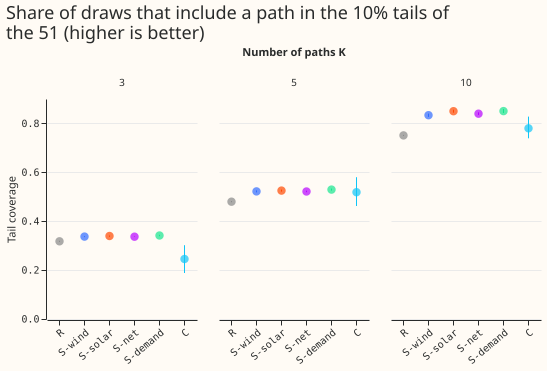
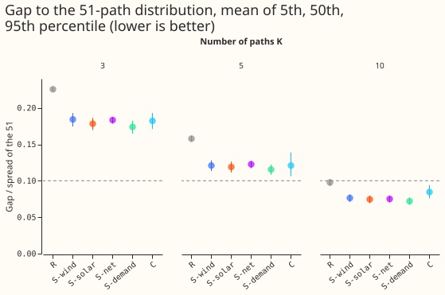
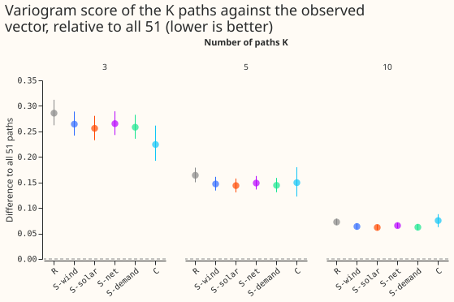
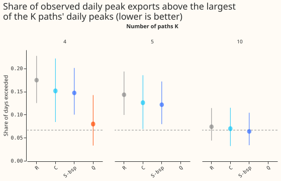
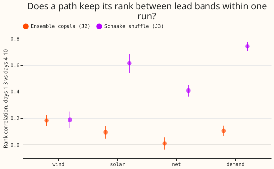

Which 3, 5, or 10 of the 51 coherent member paths should NGED's power-flow studies use, with no label attached to any path?
We asked which 3, 5, or 10 of 51 forecast scenarios NGED should run by hand, and found that choosing 5 by rank on one measure beats choosing 5 at random but still misses the extremes. At 10 scenarios the mismatch fell below 10% of the range for every rule we tried; we did not test 6 to 9. National Grid Electricity Distribution (NGED), the distribution network operator, will run a handful of power-flow studies by hand (calculations of how electricity flows through its network under one forecast scenario). We took the 51 equally likely forecast scenarios, called paths, that experiments 436 and 625 stored for each of 44 weekly runs. Each path is one joint forecast of demand, wind, and solar for 25 sites (16 Primary substations, 3 wind farms, 6 solar farms) over the next 10 days. We chose K = 3, 5, or 10 of the 51 paths in several ways. For each way, we measured how far the chosen paths' 5th, 50th, and 95th percentiles sit from those of all 51, as a share of the range between the 5th and 95th percentile of all 51 (the gap). Part 2 repeats the choice for the summed demand of the three Primaries under each of two bulk supply points (BSPs). Part 1 and Part 2 reuse experiment 161's choice of covered Primaries.
Terms: K is the number of paths chosen. R random sample of K paths (1,000 draws per run); S-wind, S-solar, S-net, S-demand rank the 51 paths by one summary, cut them into K equal groups, and draw one path from each; C k-medoids clustering (each cluster is represented by its most central path), each medoid weighted by its cluster size; Oracle the best of 5,000 random K-subsets chosen on the gap itself, a floor that no rule can reach; gap the difference between a percentile of the chosen paths and the same percentile of the 51, divided by the spread (95th minus 5th percentile) of the 51; tail coverage the share of draws that include a path in the lowest or highest 10% (ranks 1 to 6, or 46 to 51) of the 51 on a summary. The summaries are the mean wind-farm output, the mean solar-farm output, the peak net demand (an unweighted proxy, in points of capacity), and the peak Primary demand, over days 1 to 10. Intervals are month-block bootstrap intervals over 10 months. Generators are anonymised.

Figure 1 shows the share of draws that include a path in the lowest or highest 10% of the 51, with 95% month-block intervals; higher is better.

Figure 2 shows the mean gap at the 5th, 50th, and 95th percentiles as a share of the range of the 51; the dashed line is 10%.

Figure 3 shows how much worse than all 51 paths each rule scores against the observed vector of all 25 sites; lower is better.

Figure 4 shows the share of observed days on which the daily peak export beat the largest chosen path; the dashed line is the gate (all 51 plus 5 points).

Figure 5 shows the rank correlation of the 51 paths between days 1 to 3 and days 4 to 10 within a run, for two ways of coupling the paths.
Results
- Verdict (K = 5, days 1 to 10, Schaake-shuffled paths, J3: each path takes the day-to-day pattern
of a different past date for each lead).
partly supported: all four stratified rules pass the tail condition and none passes the 10% coverage condition. The decision rule's 99% intervals for tail coverage minus R were +4.2 points (+3.7 to +4.8) for S-wind, +4.5 (+3.9 to +5.2) for S-solar, +4.2 (+3.7 to +4.7) for S-net, and +4.9 (+4.3 to +5.6) for S-demand, positive in 10 of 10 months each. C: +3.9 points (-3.2 to +11.9), positive in 5 of 10 months. - Absolute scores at K = 5 (mean of the 5th, 50th, and 95th percentile gaps; tail coverage). R 0.158 and 48.0%; S-wind 0.121 and 52.2%; S-solar 0.119 and 52.5%; S-net 0.123 and 52.2%; S-demand 0.116 and 52.9%; C 0.122 and 51.9%; Oracle 0.039 and 86.7%. The 5th, 50th, and 95th percentile gaps are in the table below. R's gap at the 95th percentile varies by 0.156 (mean per-run standard deviation across draws), so one random draw can be much better or worse.
- K = 3 and K = 10. Mean gap at K = 3: R 0.226, S 0.174 to 0.185, C 0.182. At K = 10: R 0.098, S 0.072 to 0.077, C 0.085, so the mean gap of every rule is under 0.10 at K = 10. Per percentile, R is 0.101 at the 95th and C 0.123, so only the stratified rules (at most 0.083 at each percentile) pass the 10% coverage condition at K = 10. The plan predicted that K = 10 would narrow the gap without closing it; that prediction failed. Tail coverage at K = 10: R 75%, S 83% to 85%, C 78%; at K = 3: R 32%, S 34%, C 24%.
- Each stratified rule matches best the summary it ranks. S-wind has a wind gap of 0.058 at the 50th percentile and 0.085 at the 95th; on the other summaries its gaps are 0.11 to 0.19, close to R. A stratified pick on one summary therefore helps little on the others.
- Joint score (variogram, 25 nodes, relative to all 51; absolute 2.161). K = 5: R +16.4% (+14.7% to +18.4%), S +14.4% to +14.9%, C +14.9% (+11.4% to +18.9%), Oracle +15.1%. K = 10: R +7.2%, S +6.2% to +6.5%, C +7.5%. K = 3: R +28.6%, S +25.6% to +26.5%, C +22.4%. At K = 5 and K = 10 no rule differs from the others by more than about 2 points; at K = 3 the rules span 6 points (C +22.4%, R +28.6%). The loss comes mostly from using fewer paths.
- Labels do not carry over. Within a run, the Spearman correlation between the 51 paths' ranks on days 1 to 3 and on days 4 to 10 is 0.19 for wind, 0.41 for net demand, 0.62 for solar, and 0.74 for Primary demand under the Schaake shuffle (J3), and 0.18, 0.01, 0.10, and 0.11 under ensemble copula coupling (J2). Prediction P4 (a path's wind rank correlates below 0.5 between lead bands) held for wind and failed for solar and demand under J3, because the Schaake shuffle gives each path one past date for every lead.
- Coupling. J2 (ensemble copula coupling: each path follows one weather-forecast member) at K = 5 keeps S ahead of R (mean gap 0.146 to 0.149 against 0.167; tail coverage 50.5% to 50.9% against 48.0%), but C is worse than R (gap 0.195, tail coverage 51.1%), unlike under J3.
- Selection inside each band (secondary): selecting inside the 12-to-36-hour or days 1 to 3 band instead of on days 1 to 10 improves that band's gap by about 0.01 to 0.016 for the stratified rules (the days 4 to 10 band has no gap for the run of 2026-06-30, so it is not compared). Within days 1 to 10 the two selections are the same.
| Arm (K = 5) | Gap at 5th percentile | Gap at 50th | Gap at 95th | Tail coverage |
|---|---|---|---|---|
| R | 0.145 | 0.152 | 0.177 | 48.0% |
| S-wind | 0.119 | 0.105 | 0.139 | 52.2% |
| S-solar | 0.113 | 0.105 | 0.139 | 52.5% |
| S-net | 0.119 | 0.108 | 0.141 | 52.2% |
| S-demand | 0.114 | 0.099 | 0.133 | 52.9% |
| C | 0.086 | 0.104 | 0.173 | 51.9% |
| Oracle | 0.041 | 0.041 | 0.034 | 86.7% |
- Part 2: BSP group peak export (D13 and D17, K = 5 unless stated). The gate is the share of observed days on which the daily peak export exceeded the largest daily peak export among the chosen paths, over up to 9 full days per run (381 days in 43 runs). All 51 paths: 1.6%. K = 5: R 14.3%, S-bsp 12.1%, C 12.6%; all fail the gate (at most 1.6% + 5 points). K = 4: Q (paths at the 50th, 90th, 95th, and 99th percentile) 8.0% (the difference to All is +6.3 points, +2.1 to +11.8), against S-bsp 14.7% and R 17.4%. K = 10: S-bsp 6.3% (+4.7 points, +2.4 to +7.1) passes the gate; R 7.3% and C 7.0% fail by 0.7 and 0.4 points. The stratified pick on the BSP's own peak export has the lowest 50th percentile gap (0.045 at K = 5) and a 95th percentile gap of 0.114. Q hits the export tail on every run but its 5th percentile gap is 0.49 of the spread, by construction.
- Tails. The summaries are forecasts of the stored marginals of experiments 425, 429, and 430; no new quantile scores are computed. The tail results above are the experiment's tail results.
- Checks. No forecast was fitted, so the median-minus-mean check and audit triggers 3 to 6 do
not apply. Audit trigger 1 (a control fails) did not fire. Audit trigger 2 (a result contradicts
its own prediction) fired: prediction P3, that C would have lower tail coverage than R, and the
prediction that K = 10 would not close the gap both failed (P1 and P2 held, and the verdict
partly supportedwas predicted). For P3, (C was not below R on tail coverage; C's interval is wide, +3.9 points, -3.2 to +11.9); the explanation, that medoids carry the cluster's weight but sit near the centre, was not tested. Audit trigger 7 (a later design depends on this result): none does. Part 1 scored all 44 runs; the last run, 2026-06-30, has an identical wind summary on all 51 paths in days 4 to 10 (spread zero), so its gaps for that band and summary are missing and the means use the other runs. Means in the table weight each month equally. - Caveats. Demand is the stored XGBoost demand of experiment 436, not the neural networks of the
bake-off. The net-demand summary is an unweighted proxy in points of capacity. The BSP groups are
3 Primaries each (experiment 161's covered children) and omit unmetered load and Primaries that
report apparent power; the groups are in MW from each Primary's capacity. Ten months give wide
intervals; the gate for K = 10 passes by 0.3 points and should not be read as a safe margin.
Forecast paths for valid times after 2026-07-01 are used in the selection of the last runs; only
the observed values are held out. The gate takes an observed daily peak over at least 44 of 48
half-hours, which can miss a peak, and so understates the exceedance for all arms,
Allincluded. The 51 member values are those of experiments 425, 429, and 430; experiment 626 widens their tails and was not used. The day-to-day stability score was dropped, so prediction P5 (stratum persistence across weekly runs) was not tested. - Reused and new. Reused: experiment 436's
work/runsandwork/paths/J3andJ2, and the folder of experiment 625 (read only; nothing written to either). New: every selection rule, the summaries, the gap, tail, joint-score, and gate tables, and the figures. The folders of experiments 434, 436, and 377 are onPYTHONPATHfor the series table and capacities. - Options for later. Test whether NGED's power-flow answer changes between K = 5 and K = 10 paths; repeat Part 2 with the neural-network demand exports and the topology of every BSP; and choose the paths on the gate itself with a rule that trades the median gap against the tail.
- Reviews. A Sonnet plan review (12 findings: accepted a fourth demand summary, a bound for the coverage condition from an oracle floor, a within-run label check, absolute scores and R's spread beside each contrast, the corrected tail rank, 5 arms in the Bonferroni correction, one scale per node in the clustering; rejected a toy test of the reshape, since the vector is built member first, and a fractional-day variant). A Sonnet code review before the first run (the last run crashed the oracle on a zero spread, fixed; the k-medoids seed was made independent of the other arms; per-draw 5th and 95th percentiles were added). A Sonnet code review of the BSP script found the gate covered 14 days instead of days 1 to 10, fixed before the reported run. The write-up reviews are recorded in the pull request.